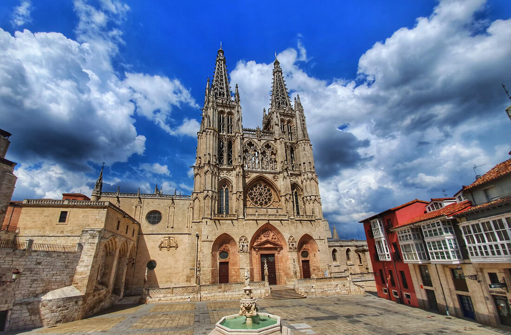

Inicio Sesión
Lugares de interes
Catedral de Burgos
La Catedral de Santa María de Burgos es una de las joyas arquitectónicas más importantes de España y un símbolo del gótico en Europa. Declarada Patrimonio de la Humanidad por la UNESCO en 1984, esta majestuosa catedral comenzó su construcción en 1221 por orden del rey Fernando III de Castilla y el obispo Mauricio, siguiendo el estilo gótico francés. Con su imponente fachada, sus torres ornamentadas y su impresionante cimborrio, la catedral alberga una gran riqueza artística y cultural. En su interior, destacan la Capilla del Condestable, el claustro gótico, la escalera dorada de Diego de Siloé, y la tumba del legendario El Cid Campeador junto a su esposa, Doña Jimena. Además, la Catedral de Burgos es un importante punto de paso en el Camino de Santiago, atrayendo a miles de peregrinos y visitantes cada año. Su belleza, historia y significado la convierten en uno de los monumentos más fascinantes de España.
Ubicación
Galeria de Imagenes
Noticias

El Burgos CF sufre una derrota ante el Oviedo en un partido reñido.
La Catedral de Burgos ilumina la ciudad con un espectáculo de luces por su aniversario.

El Mercado Medieval de Burgos atrae a miles de visitantes con su ambiente histórico.

El río Arlanzón alcanza niveles récord tras las fuertes lluvias de la semana.

La Feria de Tapas de Burgos reúne a los mejores chefs con innovadoras creaciones.